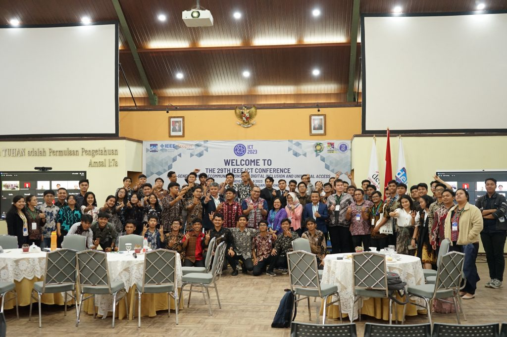

Institut Teknologi Del (IT Del) didirikan pada 1 Desember 2005 dan diresmikan oleh Presiden Susilo Bambang Yudhoyono. Pada tanggal yang sama, diadakan Symposium tentang Dukungan IT untuk Mewujudkan Good Governance yang dihadiri oleh Presiden SBY. Perubahan status dari Politeknik Informatika Del (PI Del) menjadi IT Del terjadi pada 5 Juli 2013, setelah dinyatakan dalam Surat Keputusan Kementerian Pendidikan dan Kebudayaan. IT Del kemudian mendapat izin untuk menyelenggarakan pendidikan program Sarjana, Diploma IV, dan Diploma III. Saat ini, IT Del memiliki 3 Fakultas dan 8 Program Studi, termasuk Teknik Informatika, Teknik Elektro, Manajemen Rekayasa, dan Teknik Bioproses.
Menjadi lembaga pendidikan tinggi yang unggul dan berperan sebagai agen pembaharu dan pelopor dalam pengembangan dan pemanfaatan teknologi bagi kemajuan dan kesejahteraan bangsa
Calon mahasiswa dapat mengakses informasi pendaftaran dan persyaratan di situs resmi kami. Proses pendaftaran terinci untuk setiap program studi dapat dijelaskan melalui panduan yang tersedia online. Jangan ragu untuk menghubungi tim penerimaan kami untuk bantuan lebih lanjut.
IT Del memberikan berbagai beasiswa untuk mendukung prestasi dan kebutuhan mahasiswa. Beasiswa Prestasi didapat dari IPK dengan voucher SPP. Beasiswa KIP Kuliah memberikan SPP dan uang saku. Beasiswa PPA berdasarkan IPK tertinggi. Sea Scholarship memberikan biaya SPP dan uang saku. Beasiswa Alumni memberikan bantuan dana SPP 50%.
Kerjasama di Institut Teknologi Del berkembang luas, mencakup kolaborasi dengan industri, lembaga pendidikan, dan pihak-pihak terkait. Melibatkan berbagai program kerjasama, seperti riset bersama, pelatihan, dan proyek inovatif. Kerjasama ini memperkuat ekosistem akademis dan industri untuk memberikan manfaat maksimal bagi semua pihak yang terlibat.
Institut Teknologi Del telah meraih berbagai prestasi pada tahun-tahun sebelumnya. Dosen IT Del mendapatkan pengakuan di tingkat nasional dan internasional, termasuk dalam bidang manajemen rekayasa dan teknologi informasi. Berbagai prestasi ini mencerminkan dedikasi dan keunggulan IT Del dalam memberikan kontribusi pada dunia pendidikan dan industri.